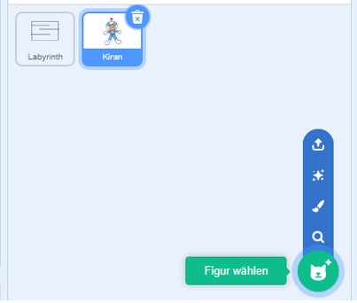
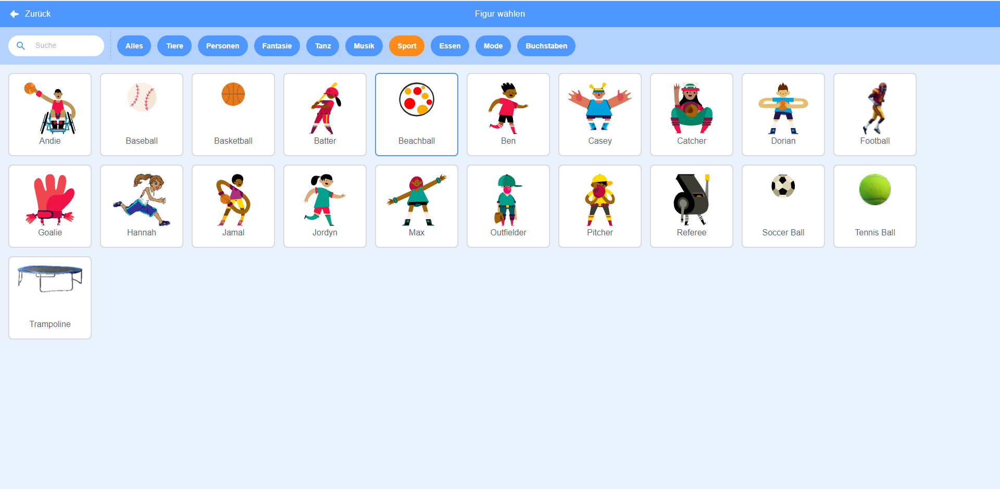
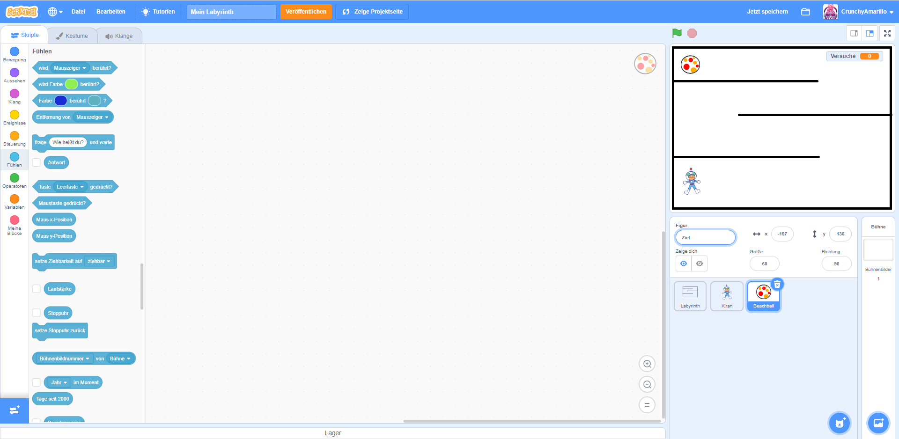
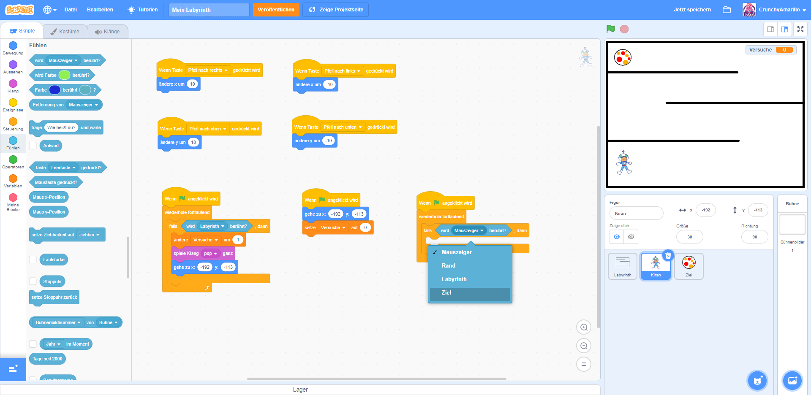
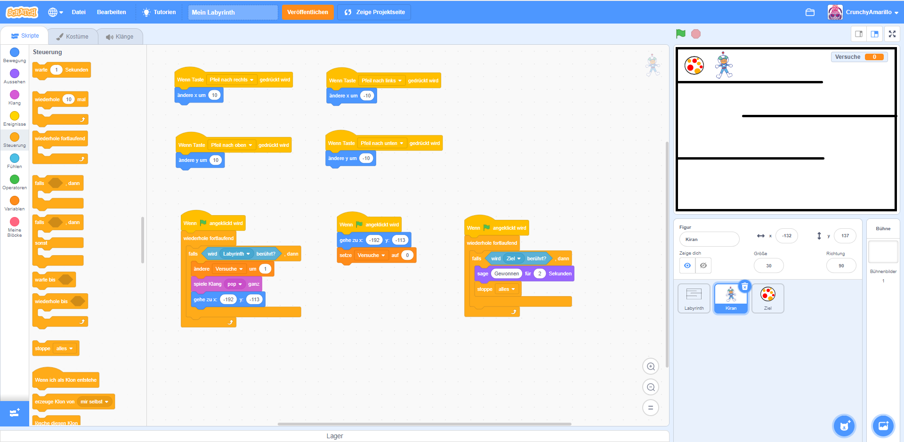

Ein Ziel einbauen
Jetzt wollen wir dem ganzen Spiel auch ein Ziel geben. Das ist ein Punkt im Labyrinth, welchen deine Figur erreichen muss. Wenn deine Figur am Ziel ankommt, beenden wir das Spiel.
1. eine Figur als Ziel
Um ein Ziel einzubauen, werden wir einen einfachen Trick anwenden. Wir nutzen noch eine weitere Figur, die das Ziel sein soll. Deshalb musst du als erstes noch einmal im Figuren-Menü einen neue Figur auswählen. 
2. Zielfigur einfügen
Suche dir einen beliebige Figur aus und füge diese durch Anklicken in dein Programm ein. Ich habe den Beachball gewählt - er sieht ein wenig wie eine Zielscheibe aus. 
Sobald du die Figur einfügt hast, ist diese automatisch ausgewählt. Das Programm-Code-Fenster ist nun wieder leer, da du keinen Code für diese Figur programmiert hast. Passe die Größe deiner Zielfigur an und schiebe sie im Vorschaufenster an die gewünschte Stelle. Wenn du möchtest, kannst du die neue Figur noch umbenennen. Ich habe meine Figur als "Ziel" bezeichnet - so finde ich sie an anderer Stelle beim Programmieren schnell wieder. 
3. Spielfigur anpassen
Als erstes wollen wir nun wieder dafür sorgen, dass deine Spielfigur merkt, wenn sie die Zielfigur berührt. Du benötigst dafür wieder folgende Blöcke:
Wenn (grüne Fahne) angeklickt wird(Gruppe: Ereignisse)wiederhole fortlaufend(Gruppe: Steuerung)falls < > dann(Gruppe: Steuerung)wird (Mauszeiger) berührt(Gruppe: Fühlen)
Ordne die Programmblöcke wie im Bild gezeigt an. Stelle diesmal den
wird (Mauszeiger) berührt-Block so ein, dass anstelle des (Mauszeiger) deine Zielfigur
ausgewählt wird.

4. Spiel beenden
Da nun dein Programmcode in der Lage ist, eine Berührung mit der Zielfigur zu ermitteln, müssen wir als letztes nur noch festlegen, was deine Figur in diesem Fall tun soll. Ich habe mich dafür entschieden, dass meine Figur einen kleinen Text sagt, wenn das Spiel beendet wird. Du kannst es gern genau so machen oder dir etwas anderes einfallen lassen. Du könntest zum Beispiel auch einen Klang abspielen. Ich habe für mein Spielende noch folgende Blöcke im Programmcode eingebaut:
sage (Hallo!) für (2) Sekunden(Gruppe: Aussehen) - um meine Spielfigur einen Text sagen zu lassenstoppe [alles](Gruppe: Steuerung) - um das Spiel zu beenden

5. Ausprobieren
Test jetzt dein Spiel wieder aus und schau, ob alles so funktioniert, wie du es dir vorstellst.
Aktiviere den Vollbildmodus im Vorschaufenster  .
Stoppe zunächst dein Programm, falls dieses noch läuft über die Schaltfläche
.
Stoppe zunächst dein Programm, falls dieses noch läuft über die Schaltfläche  . Starte das Programm
anschließend neu.
. Starte das Programm
anschließend neu.